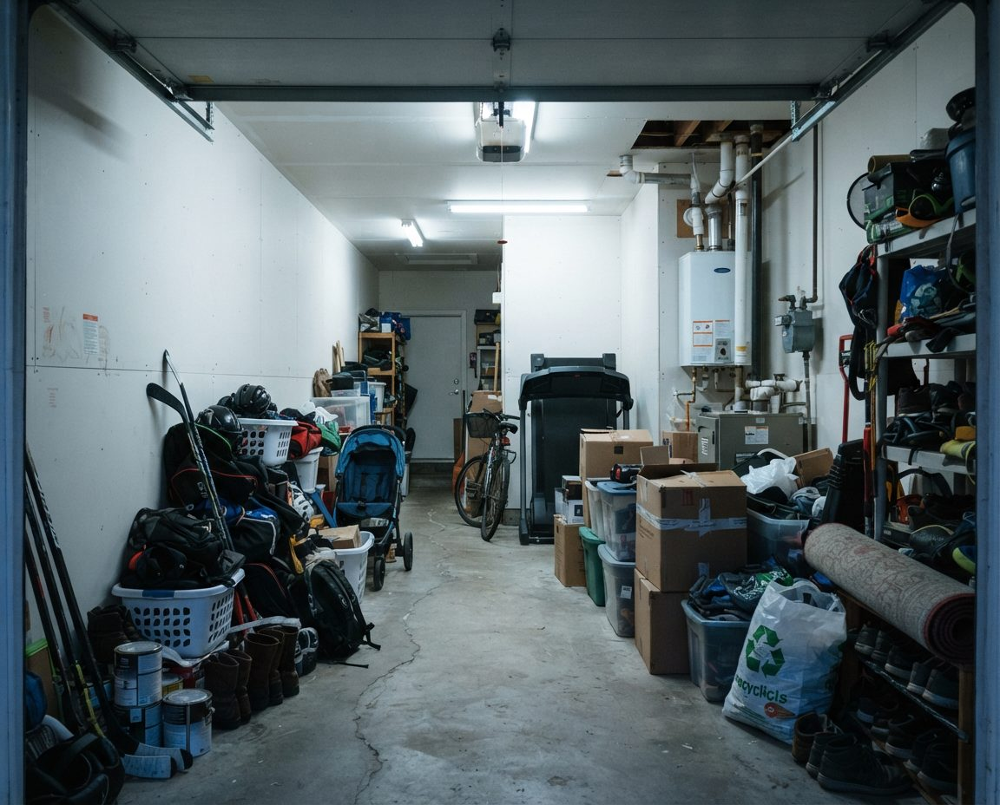
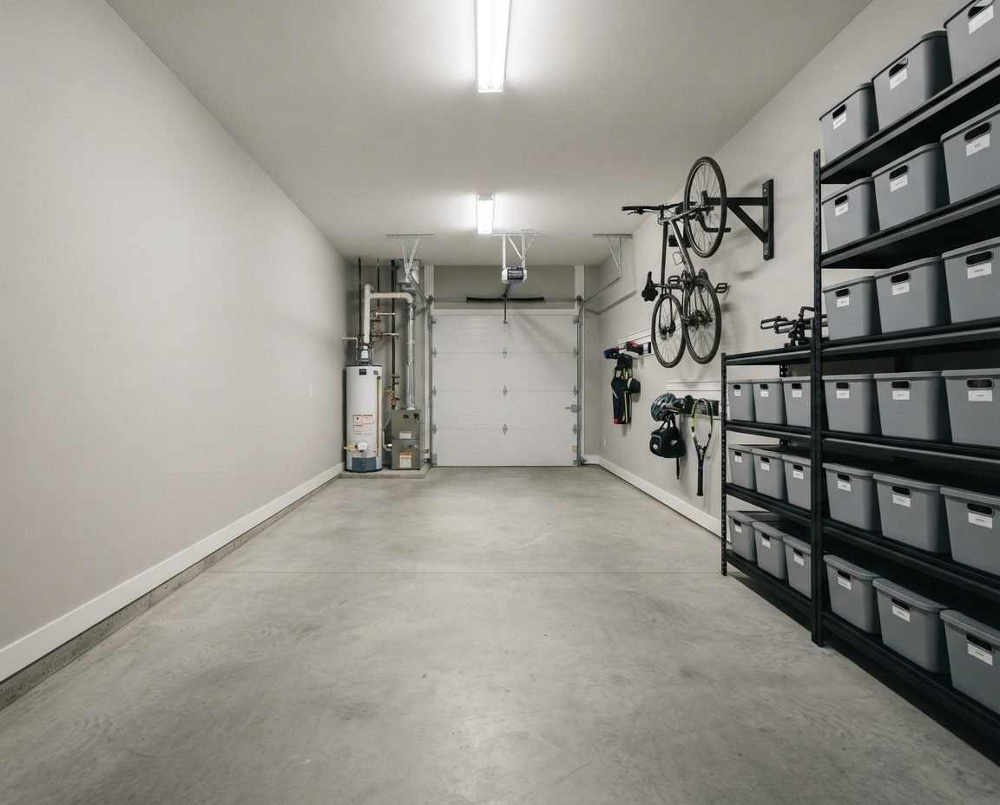
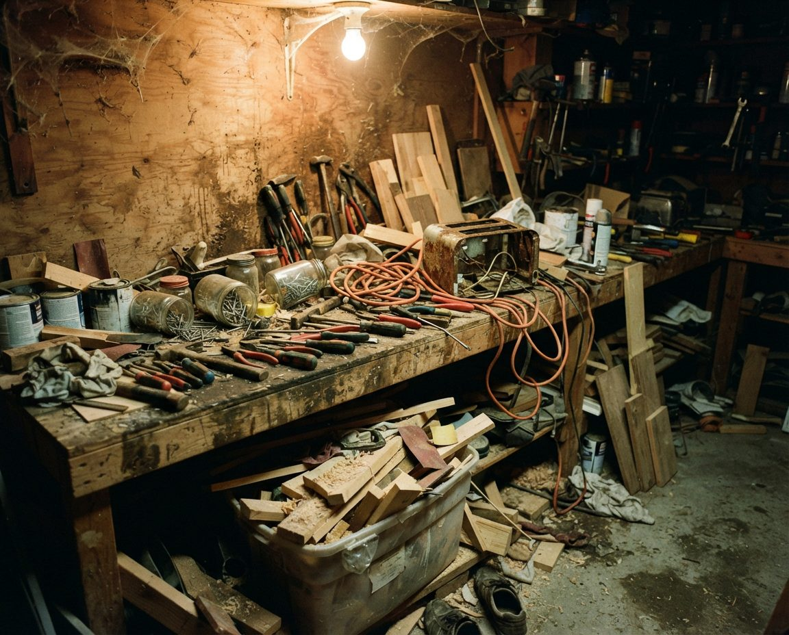

Seven zones, nothing on the slabRoughly $1,400 in hardware, not $12,000 in cabinetry. Everything sealed, lifted and given a defined home — which is what stops it filling back up.
Search "garage organization Vancouver" and you'll mostly find cabinet manufacturers. Their design work exists to sell you cabinetry, and a Vancouver fit-out routinely lands between $4,000 and $15,000. We sell the organising, not the boxes. Independent layout design, damp-proof zoning built for a rain-coast garage, and hands-on implementation — with hardware specified to your budget, not ours.
Seven zones, nothing on the slabRoughly $1,400 in hardware, not $12,000 in cabinetry. Everything sealed, lifted and given a defined home — which is what stops it filling back up.
Vancouver's garage organisation market is dominated by companies that manufacture and install custom cabinetry, slatwall, overhead racking and floor coatings. Several are long-established and genuinely good at what they do. But it's worth understanding what you're buying: their design service exists to specify their product. If the honest answer to your garage is "you need $700 of decent shelving and a different layout," that's not an answer their business model can give.
We're independent. We don't manufacture anything, we're not contracted to any brand, and our revenue is the labour and expertise. That makes a specific recommendation possible: sometimes it's off-the-shelf industrial shelving from a big-box retailer, laid out properly. Sometimes it's a slatwall system. Occasionally it genuinely is custom cabinetry — and when it is, we'll tell you that and point you at the companies who do it well.
| GarageScape | Custom cabinet company | |
|---|---|---|
| What you're paying for | Labour, design and expertise | Manufactured cabinetry and installation |
| Typical Vancouver spend | $549–$1,800 service + $600–$2,500 hardware | $4,000–$15,000+ |
| Brand independent | Yes | No — theirs |
| Includes decluttering & sorting | Yes | Rarely |
| Includes cleaning the space | Yes | Floor prep for coating only |
| Handles disposal & donation | Yes | No |
| Showroom finish | No | Yes — this is their strength |
| Lead time | Days | Weeks — manufacturing lead time |
| Best when | You want the space to work | You want the space to look extraordinary |
Every Vancouver garage layout we produce starts from one constraint that simply doesn't exist in a dry climate: the bottom of the room is wet, permanently, and no amount of tidying changes that.
Concrete slabs poured before modern vapour barrier practice wick groundwater upward continuously. Combined with roughly 1,200 mm of annual rainfall, high winter humidity and unheated, unventilated structures, the floor and the lower portion of the walls stay damp through much of the year. We treat the slab and the bottom 30 to 45 cm of every wall as a permanent wet zone and design accordingly.
Flat-pack MDF cabinets bought from a big-box store and installed directly on the slab against an exterior wall. Within two Vancouver winters the bottom shelf has swollen, the back panel has bowed, and there's mould behind it. It isn't a bad product — it's the wrong product for this climate, in the worst possible position. Raising it 10 cm and pulling it 5 cm off the wall would have prevented most of it.
Zoning is the part that makes a garage stay organised. Without defined zones, items land wherever there's a gap and the system degrades within weeks. Our standard Vancouver layout uses seven, adapted to your actual contents.
| Zone | Typical contents | Where it goes, and why |
|---|---|---|
| 1. Daily access | Recycling, waste, dog leads, shoes, current-season sports bag | Nearest the house door at waist height — anything requiring a detour won't be used |
| 2. Active gear | Bikes in use, current-season boards or skis | Wall-mounted at accessible height, away from window sightlines |
| 3. Seasonal gear | Off-season skis, camping kit, patio furniture, holiday decorations | Overhead racking or high shelving — bulky, light, rarely accessed |
| 4. Tools & workshop | Hand tools, power tools, fasteners, workbench | One wall, at working height, near power — pegboard or slatwall over a bench |
| 5. Garden & outdoor | Mower, hoses, soil, pots, long-handled tools | Nearest the exterior door; moisture-tolerant, so it can live low |
| 6. Bulk & utility | Paint, chemicals, bulk paper goods, spare filters | Sealed shelving away from heat sources, within fire code limits |
| 7. Vehicle | Actual parking space | Defined and defended — the zone that vanishes first if the others overflow |
Zone 7 deserves a note. In Vancouver, where street parking permits, residential parking restrictions and vehicle break-ins are all live issues, an unusable garage has a direct daily cost. It's also the zone most people quietly surrender — and the one they most regret losing. We design outward from it rather than treating it as leftover space.


Strata tandem garage — organised within the rulesNarrow-depth shelving down one side only, full clearance maintained around the furnace and hot water tank, nothing obstructing sprinkler coverage or egress.
Vancouver garages carry a density of outdoor equipment that would be unusual anywhere else in Canada. Cypress, Grouse and Seymour are inside forty minutes; Whistler is two hours; the ocean is at the end of the street. A layout that treats gear as an afterthought fails immediately.
Off the floor, always — a bike on a damp Vancouver slab corrodes its chain, cassette and bottom bracket from below, and a good drivetrain is expensive to replace. Daily riders go on vertical wall hooks at accessible height. Where floor width is tight, horizontal wall racks work better. Seasonal or spare bikes go on ceiling hoists.
Security is a genuine design input here, not a footnote. Vancouver has the highest rate of bicycle theft per capita among major Canadian cities, and bikes are taken from inside closed garages and locked parkades regularly. We position racks out of sightlines from windows and open doors, and recommend anchoring rather than simply hanging where the garage is lane-accessible.
Long, light and awkward — which makes them ideal ceiling candidates. Wall-mounted horizontal racks work where ceiling height is limited. The point most people miss: never store them wet, and never store them against an exterior wall, because a board bag holding seawater in a Vancouver garage is a mould source within days.
Vertical wall racks in season, high shelving out of season. Store dry, waxed and off the concrete — edges rust quickly in a damp coastal garage, and a season of surface rust on edges is entirely avoidable.
The category most damaged by Vancouver garages, because it's the one most often stored in cardboard. Tents, sleeping bags, packs and stoves go in sealed bins, off the floor, grouped by trip type rather than by object type — car camping in one bin, backcountry in another — so packing takes one lift instead of ten decisions. Sleeping bags stored compressed in a damp garage lose loft permanently; they go in breathable storage indoors where possible, or sealed and high where not.


Hung, never folded, never on concrete. Neoprene degrades in sustained damp, and a wetsuit left on a Vancouver garage floor over winter is generally finished.
Before we specify a single bracket, we establish what your walls actually are. This varies more in Vancouver than most cities because the housing stock spans a century, and it entirely determines what can be hung and how heavily it can be loaded.
| Construction | Typically found in | What it means for storage |
|---|---|---|
| Unlined studs, irregular spacing | 1920s–40s detached lane garages | Studs visible and easy to hit, but spacing is inconsistent and old timber may be compromised; every fixing is checked individually |
| Shiplap or board sheathing | Pre-war garages, character homes | Won't carry load alone; fixings must reach framing behind |
| Concrete block | Mid-century garages, some lane structures | Excellent load capacity with correct masonry anchors; wrong anchor pulls straight out |
| Drywall over 16" studs | Post-1970 attached garages | Straightforward; standard slatwall and rail systems work well |
| Fire-rated drywall | Attached garages, all strata townhouses | Must not be breached beyond code allowance — penetrations need care and, in strata, sometimes permission |
| Poured concrete | Under-house garages, Vancouver Specials, parkades | Very strong; needs proper drilling and anchors, and often a moisture break behind mounted items |
This catches Vancouver owners out repeatedly, particularly in townhouses and buildings with parkades.
Strata corporations can and do adopt bylaws governing what may be stored in a garage or parking area — restrictions on storing furniture and household possessions in parkade areas are common, and enforcement happens. Separately, the BC Fire Code and the BC Building Code restrict combustible storage in parking structures, and how strictly depends on the building's original design and classification. A West Vancouver case a few years ago saw residents told they couldn't store household possessions in enclosed storage units within their own parking garage, and the analysis turned on the building's original design compliance rather than on tidiness.
In practice we flag anything likely to cause a problem: quantities of flammable liquids, propane cylinders, storage blocking sprinkler coverage or fire separations, items obstructing egress, and anything stacked against a fire-rated wall. If you're in a strata, check your bylaws and Form B before you design a storage system around a stall you may not be permitted to use that way — and we'll tell you when that's worth doing.
Full measure-up including ceiling height, door track clearance, obstructions, wall construction, power locations, and where the furnace, hot water tank and panel sit. We identify the wet zone, moisture entry points, and any strata or fire code constraints.
We inventory what actually needs to live here by category and by access frequency — not by what's currently in the garage, which usually includes plenty that shouldn't be. This produces the zone allocation, sized to real volumes rather than guesses.
You get a layout and a specific hardware list with prices, at a budget level you set. Because we're brand-independent, that list is whatever genuinely works — big-box industrial shelving, slatwall, overhead racking, or a mix. If your garage warrants custom cabinetry, we'll say so and refer you.
Full sort before anything is installed. Building storage for things you don't want is the most common way an organising budget gets wasted. Disposal and donation handled and charged at cost.
The floor and walls get cleaned while the space is empty. It's the only time it's easy, it's substantially cheaper bundled, and mounting shelving over an existing mould patch just hides it.
Hardware installed to the wall construction we identified, with correct anchors and verified load ratings. Contents loaded into zones, into sealed bins, off the floor, with air gaps behind. Nothing porous goes back onto the slab.
Everything labelled, plus a simple written map of what lives where. That map is what lets everyone else in the household put things back correctly — which is the single biggest factor in whether a garage stays organised past six months.
Service pricing below. Storage hardware is quoted separately at cost and specified to a budget you set — typically $600 to $2,500 for a full double garage.
Most organised garages degrade within a year. It's almost never a discipline problem. It's a design problem, and there are three specific causes.
A system designed around what was in the garage on the day, with no allowance for what enters it weekly. Recycling, returns, sports kit, deliveries, seasonal purchases. If those have no defined home, they land on the floor, and once the floor is in use as storage the system is over. We size zones with growth room and give the high-turnover categories the most accessible positions.


Zone 4 — tools and workshopEvery tool gets an outlined position, so putting it back is faster than not. This is the zone that degrades quickest when nobody else in the household knows the system.
One person designs it, everyone else guesses. Things get put back approximately, then not at all. The written map and consistent labelling exist entirely for this — it's low-tech and it's the highest-return part of the whole job.
Specific to Vancouver, and the one that catches people who've organised garages elsewhere. Cardboard collapses. MDF swells. Fabric mildews. Metal on the slab rusts. Two winters later the system is physically failing and its contents are ruined, which reads as "the organising didn't work" when actually the materials were wrong for a coastal garage. Every material choice we make is filtered for damp tolerance first.
All 22 Vancouver neighbourhoods, plus Metro Vancouver:
City of Vancouver neighbourhoods
Metro Vancouver — tap a city for local detail
Our service starts at $549 for a single-car garage and $899 for a standard double, covering design, layout and hands-on implementation. Hardware is separate and specified to your budget — a solid wall-and-shelf system for a double garage typically runs $600 to $2,500 in materials. That's a fundamentally different model from a custom cabinet company, where a Vancouver fit-out commonly runs $4,000 to $15,000 because the cabinetry is the product.
They sell a manufactured product and the design serves that product. We sell labour and expertise and aren't tied to any manufacturer, so the recommendation can honestly be $700 of good shelving rather than $9,000 of cabinets. Both models are legitimate — if you want a showroom garage with matched cabinetry and a polyaspartic floor, a cabinet company does that better than we do and we'll say so. If you want the space to work without spending five figures, that's us.
Two things. Moisture dictates the design: nothing porous on the slab, the bottom 30–45 cm of every wall treated as a wet zone, cardboard eliminated, materials chosen for damp tolerance over looks. And the contents are different — Vancouver garages carry an unusual density of outdoor gear. Bikes, paddleboards, kayaks, skis, snowboards and camping equipment are bulky, seasonal and expensive, and a layout that ignores them fails within a month.
Yes, and we'd rather do it with you than have you do it alone beforehand. Organising a garage that hasn't been decluttered means building expensive storage for things you don't want. Most Vancouver clients book decluttering and organisation together — it's cheaper than two visits and the sort informs the layout.
In most cases, but Vancouver wall construction varies enormously and dictates what's possible. A 1920s detached lane garage may have unlined studs at irregular spacing, or shiplap, or no sheathing behind the cladding. Concrete block needs different anchors again. Post-1990 attached garages are usually straightforward. We identify construction before specifying anything — a loaded shelf pulling out of a wall is dangerous and expensive.
Off the floor and off the wall bottom, always — a bike on a damp Vancouver slab corrodes its drivetrain from below. Vertical wall hooks for daily riders at accessible height, horizontal racks where floor space is tight, ceiling hoists for seasonal bikes. Security matters too: Vancouver has the highest bike theft rate per capita of any major Canadian city and bikes are taken from closed garages regularly, so we keep racks out of window sightlines and recommend anchoring rather than simply hanging.
It fills back up when the system has no home for what actually enters the garage — that's a design failure, not a discipline failure. We design against it three ways: every category gets a defined zone with growth room, the highest-turnover items get the most accessible spots, and you get a simple written map so everyone in the household can put things back correctly. We also offer an annual reset visit, which most clients find is all the maintenance needed.
Yes, and they're a specific design challenge — long and narrow, with the furnace and hot water tank usually occupying part of the space and clearances around that equipment that must be maintained. There are rules too: BC Fire Code and most strata bylaws restrict combustible storage in garages and parkades more tightly than owners expect. We design within those constraints and flag anything likely to draw a bylaw notice.
Design and implementation on a single-car garage is usually one day. A standard double is one to two days depending on hardware. Add half a day to a day if decluttering is part of the project. Anything with a lead time is ordered in advance so we're not waiting on deliveries on site.
Free on-site quote and measure. Independent hardware specification at a budget you set — no cabinet quota to hit.
Serving Vancouver, Burnaby, Richmond, North & West Vancouver, New Westminster, Coquitlam, Surrey and Delta.